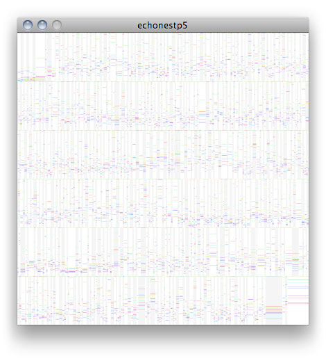

echonestp5
A library by melka for the programming environment processing. Last update, 09/22/2009.
This library is a wrapper that simplify the use of the Echo Nest API.
The Echo Nest API allows analysis of music files based on the "Musical Brain".
From the Echo Nest's web site : "The Echo Nest's APIs are based on the
"Musical Brain", a one-of-a-kind machine learning platform that actually listens to music and reads about music from every corner of the web. We're using the Musical Brain to power enhanced music search, recommendations and interactivity for online music services."
More info : http://the.echonest.com
You'll need an Echo Nest API Key to use this library. Get one at http://developer.echonest.com/account/register/
Download
Download echonestp5 version 0.1.1 in .zip format.
Installation
Unzip and put the extracted echonestp5 folder into the libraries folder of your processing sketches. Reference and examples are included in the echonestp5 folder.
Keywords echonest,audio,analysis
Reference. Have a look at the javadoc reference here. a copy of the reference is included in the .zip as well.
Source. The source code of echonestp5 is available at google code, and its repository can be browsed here.
Examples
Find a list of examples in the current distribution of echonestp5, or have a look at them by following the links below.

Tested
Platform MAC OS 10.6, Ubuntu 9.04
Processing 1.0.7
Dependencies com.myjavatools.web.ClientHttpRequest